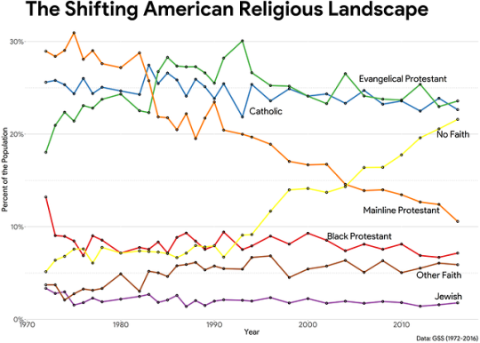

The church is not actually falling apart. America is becoming more secular, but from the perspective of the church that’s not necessarily a bad thing.

Interesting, and definitely worth noting, but I am unconvinced.
My impression is that we’re at the stage of having a lot of notional check-the-box-on-the-form Catholics and Evangelicals who don’t buy into the theology, who refuse to be constrained in their behavior by religious dictates, and whose kids are tremendously likely just to drop the identification altogether. Y’know, where mainline Protestants were a generation or two ago. Certainly, when religious people complain about seeing their congregations and organizations falling apart, I don’t think they’re making it up.
(In part I base this on analogy to Judaism, which has also been pretty stable for decades according to this chart, but which is definitely suffering from institutional disintegration in every less-orthodox-than-the-Orthodox denomination.)
With Catholicism in particular, of course, the waves of mostly-Catholic immigrants present some level of complication.